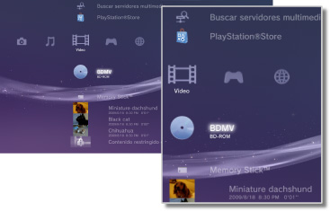

Vídeo > Categoría Vídeo
Categoría Vídeo
En el menú  (Vídeo) se muestran los siguientes iconos. Los iconos pueden variar en función de las condiciones de uso.
(Vídeo) se muestran los siguientes iconos. Los iconos pueden variar en función de las condiciones de uso.

 |
Herramienta de datos BD | Permite guardar los datos administrativos que utilizan los discos Blu-ray Disc™ (BD). |
|---|---|---|
 |
Buscar servidores multimedia | Inicia una búsqueda de servidores multimedia DLNA conectados en la misma red. |
 |
Servidor multimedia | Permite la conexión a servidores multimedia DLNA y la reproducción de los archivos de vídeo que se encuentren almacenados en ellos. El icono mostrado variará en función del tipo de servidor. |
 |
Herramienta para editar y subir vídeos | Edite contenido de vídeo guardado en el almacenamiento del sistema del sistema PS3™. |
 |
BD-ROM / BD-R / BD-RE | Permite reproducir un Blu-ray disc (BD). |
 |
DVD-ROM/DVD-R/DVD+R/DVD-RW/DVD+RW | Permite reproducir un DVD o un disco AVCHD. |
 |
Disco de datos | Permite reproducir los archivos de vídeo almacenados en discos grabables compatibles como, por ejemplo, CD-R o DVD-R. |
 |
Memory Stick™ | Permite reproducir archivos de vídeo guardados en un soporte Memory Stick™.* |
 |
SD Memory Card | Permite reproducir archivos de vídeo guardados en una SD Memory Card.* |
 |
CompactFlash® | Permite reproducir archivos de vídeo guardados en una tarjeta CompactFlash®.* |
 |
PSP™ (PlayStation®Portable) | Permite reproducir archivos de vídeo guardados en un soporte Memory Stick™ de un sistema PSP™. |
 |
PSP™ (PlayStation®Portable) | Permite reproducir archivos de vídeo guardados en el sistema de almacenamiento del sistema PSP™go. |
 |
Cámara digital | Permite reproducir archivos de vídeo guardados en una cámara digital compatible con el sistema PS3™. |
 |
WALKMAN®/ATRAC Audio Device (WALKMAN®) | Permite reproducir archivos de vídeo guardados en un dispositivo de audio WALKMAN®/ATRAC Audio Device (WALKMAN®). |
 |
ATRAC Audio Device | Permite reproducir archivos de vídeo guardados en un dispositivo ATRAC Audio Device. |
 |
Dispositivo USB | Permite reproducir archivos de vídeo guardados en un dispositivo de almacenamiento masivo USB. |
 |
Películas de cámara digital | Permite reproducir archivos de vídeo guardados en la carpeta DCIM de un soporte de almacenamiento. |
|
(carpeta) | Este icono se mostrará para las carpetas creadas mediante un ordenador en un soporte de almacenamiento. |
 |
(archivos guardados en el almacenamiento del sistema) | Permite visualizar archivos de vídeo guardados en el almacenamiento del sistema del sistema PS3™. Se mostrarán las imágenes en miniatura correspondientes. |
 |
(datos descargados en el almacenamiento del sistema) | Este icono se visualiza en archivos de vídeo descargados en el almacenamiento del sistema. Cuando se inicia esta función, se instalan los datos y se puede reproducir el archivo de vídeo. |
| * |
Para poder utilizar los soportes de almacenamiento con determinados modelos del sistema PS3™, necesitará un adaptador USB apropiado (no incluido). Cuando los utilice con un adaptador USB, los soportes de almacenamiento aparecerán como |
|---|
 (Dispositivo USB).
(Dispositivo USB).Notas
- Se ha suspendido la venta y el alquiler de contenidos de vídeo de PlayStation®Store en el sistema PS3™.
- Si desea obtener más información acerca de DLNA, consulte
 (Ajustes) >
(Ajustes) >  (Ajustes de red) > [Conexión al servidor multimedia] en esta guía.
(Ajustes de red) > [Conexión al servidor multimedia] en esta guía. - Para que el sistema pueda reproducir contenido con protección de derechos de autor desde un Blu-ray Disc con una resolución de 1080p, debe utilizar un cable HDMI para conectarlo a un dispositivo que sea compatible con el estándar HDCP (High-bandwidth Digital Content Protection).
- Es posible que en algunos tipos de archivos de vídeo protegidos por copyright no se muestren las imágenes en miniatura.
- Al reproducir discos BD con contenido que presente restricciones de control paterno, la reproducción quedará limitada en función del nivel de control paterno ajustado en el sistema PS3™. El nivel de control paterno del disco BD puede ajustarse en (Ajustes) >
 (Ajustes de seguridad).
(Ajustes de seguridad). - Al reproducir un DVD con contenido que presente restricciones de control paterno, es posible que sea necesario introducir una contraseña para reproducir dicho contenido. La contraseña puede ajustarse en (Ajustes) > (Ajustes de seguridad).
- Los contenidos sujetos a restricciones de control paterno se mostrarán como
 . Puede habilitar la reproducción de dichos contenidos si introduce una contraseña de 4 dígitos. La contraseña puede ajustarse o cambiarse en (Ajustes) > (Ajustes de seguridad).
. Puede habilitar la reproducción de dichos contenidos si introduce una contraseña de 4 dígitos. La contraseña puede ajustarse o cambiarse en (Ajustes) > (Ajustes de seguridad). - Los discos BD bloqueados se visualizan mediante el icono
 . Para reproducir el contenido de dichos discos, introduzca la contraseña ajustada por el desarrollador.
. Para reproducir el contenido de dichos discos, introduzca la contraseña ajustada por el desarrollador. - Es posible que, en raras ocasiones, los discos u otros soportes no funcionen correctamente al reproducirlos en el sistema PS3™. Esto se debe principalmente a las variaciones en el proceso de fabricación o codificación del software.
- Si se conecta un dispositivo que no es compatible con el estándar HDCP (High-bandwidth Digital Content Protection) mediante un cable HDMI, no será posible emitir el vídeo ni el audio a través del sistema.
Visualización de contenido en 3D
Es necesario disponer de un televisor compatible con 3D que cumpla con la normativa para 3D y de un cable HDMI de alta velocidad para poder visualizar contenido en 3D.
Notas
- En función del contenido, mientras se reproduce el contenido de Blu-ray 3D™, es posible que algunos elementos, como los menús y el idioma de los subtítulos, se visualicen de manera distinta en 3D en el sistema PS3™ comparado con otros dispositivos de reproducción.
- En función del contenido, es posible que determinadas funciones BD-J no se reproduzcan en 3D, o bien, que no funcionen correctamente en el sistema PS3™.
- El audio Dolby TrueHD no es compatible durante la reproducción de contenido de Blu-ray 3D™. En su lugar, se utiliza el formato Dolby Digital.
Almacenamiento local de discos Blu-ray (BD)
Si durante la reproducción de discos BD se muestra un mensaje de error que indica que no queda espacio suficiente en el almacenamiento local, elimine los archivos innecesarios del almacenamiento del sistema para aumentar la cantidad de espacio libre.
El almacenamiento local es una zona de almacenamiento de datos definida en las normas del perfil BD-ROM 1.1/2.0. Estos datos se guardan en el almacenamiento del sistema del sistema PS3™.